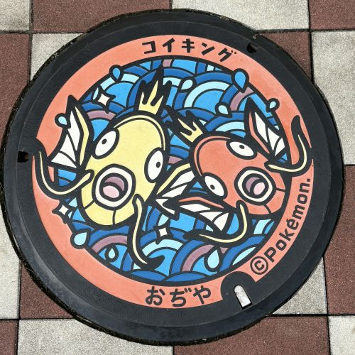

お気に入りのポケふた紹介
場所 ： 新潟県小千谷市
ポケモン ： コイキング・コイキング（色違い）

私のお気に入りのポケふたは、新潟県小千谷市に設置されている、コイキングと色違いのコイキング（いわゆる金のコイキング）が描かれたデザインのものです。 小千谷市は錦鯉の名産地として知られており、その地域の特徴とポケモンがうまく結びついているところに魅力を感じます。
このポケふたでは、水の中を元気に泳ぐコイキングたちの様子が描かれていて、見ているだけで明るい気持ちになります。 特にコイキングが少しあほっぽい表情でこちらを見ているところが印象的で、そのゆるさが逆にかわいく、お気に入りのポイントです。 特に、通常の赤いコイキングに加えて金色のコイキングが描かれている点が印象的で、特別感があり、思わず写真に撮りたくなるデザインです。
普段はあまり気にしないマンホールだけど、こうしてポケモンのデザインがあることで、街を歩く楽しみが増えると思います。 このポケふたは、地域らしさとポケモンの魅力がうまく合わさっていて、とても好きな一枚です。 他にも小千谷市には3枚のコイキングが描かれたマンホールがあるので、ぜひ見に行ってみてください！